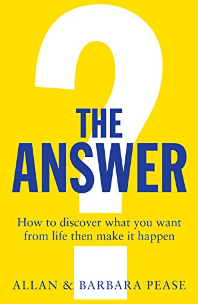

Do you have a secret ambition to achieve something great? If you do, how long will it remain a secret? Most people never discover what they really want to do with their lives. As you will soon read, most people do not like going to work, most people who live to old age are broke and most people are killed by something such as cancer, heart disease and other physical illnesses. Hardly anyone dies of old age. This chapter will show you the first dilemma most people struggle with – how to decide what you want. At first this may sound simple – to decide what you want from life – but most people don’t have a process for figuring out how to do it.
The reason most people don’t accomplish much or have much in their lives is because they haven’t decided what they want. Most people struggle with questions such as ‘How do you define success?’, ‘Who do I want to become?’, ‘What do I want to experience?’, ‘What assets do I want to accumulate?’ Everyone knows the feeling of having an inner urge to do something that excites you whenever you think of it. But generally, people rarely make that thing happen.
What’s the point of climbing the ladder of success to discover you’ve leaned it against the wrong wall?
Living up to other's expectations is futile and will only bring you anxiety and unhappiness. We respect people who are passionate about what they want and who beat their own path, even when we don’t necessarily agree with their aim in life. Make a decision now that you will take control and do what you want in life, not what others may demand of you.
The starting point is to write down anything you think you may want to do or achieve, regardless of how wild it may seem to anyone else. Include on your list free things you had a childhood taste for.
Also, record any idea you may see or hear that strikes a chord with you. Try to have at least ten to twenty items on this list, and include anything that has ever seemed appealing to you. And we mean anything. Writing something down does not mean you are committed to it – it is just an idea that appeals to you right now.
Do not restrict your ideas to your past. When you start your list, keep it to yourself or share it only with someone you completely trust. Do not discuss the list with anyone who may want to manipulate you. Do not tell anyone who may want to manipulate you. Do not tell anyone your list is a silly dream because it cannot be done. The list is all about you. Do not show it to dream stealers, and never allow yourself to be defined by someone else’s opinion.
Don’t let people who gave up on their dreams talk you out of yours.
Collect pictures, images, and text that describe or illustrate your goals. Put them in a book, and read it every day.As an example,here are some of the things Barbara and I have written on our personal lists. Some items we wrote together,others we wrote individually, and some at different times in our lives.
These lists are wide and varied and include things that often just seemed like an interesting idea at the time. But, either individually or together, we have started and mostly achieved over 90 per cent of the items we wrote on these lists. Some we achieved at a world-class level, for others we received national acclaim or awards; some were on a local level, and some were only significant to us personally. And some we were really crap at – Barbara no longer wants to play the piano and I don’t want to tap-dance any more. A few goals have not been completed yet and some were abandoned because,once we got into them, we discovered that we didn't really like them.
"The secret of getting ahead is getting started." – Mark Twain
A study of wealthy people in the 1970s was conducted to determine the main differences between millionaires and billionaires. While both groups were wealthy, the researchers wanted to know why one group was so dramatically wealthier than the other. After three years of research, the one point that was the most similar between the two was that both groups knew exactly what they wanted. But the billionaires had clearly written lists of their ideas, goals and objectives. Surprisingly for the researchers, the existence of a written list of intentions was the most striking difference. While the millionaires were equally passionate about their goals and knew exactly what they wanted, they had a significantly lower incidence of written plans than did the billionaires. In another USA study of goal-setting, Paul J. Meyer reported that:
Of the people in this study, Meyer reported:
The message here is clear . Make a list of your goals - in handwriting
Constantly re-reading your written list of goals will soon clarify how important or an important each item really is to you .keep adding to your list , modifying it and subtracting from it. After a while ,some of the items will keep reappearing on it because these are the ones that will have the most meaning for you .Put your list on your bedroom or bathroom wall ,put another copy on your refrigerator or use it as a screensaver on your computer or mobile device.put a copy in any location where you can always see it. As you think of new things,add them to the list. The longer your list,the better.
The how is discussed in the book "THE ANSWER" . Want to know "how to achieve your goals", grab a copy today!

Order on Amazon